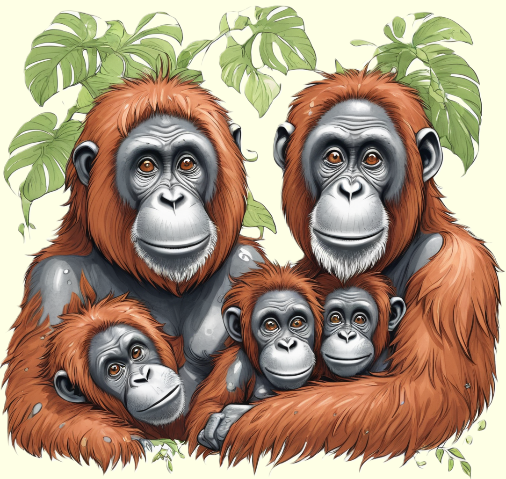

Der Orang-Utan, ein intelligentes und soziales Primatenkind, begeistert mit seinem roten Fell und seiner beeindruckenden Kletterkunst.
Entdecke die faszinierende Welt dieses Menschenaffen und erfahre, wie er in den Regenwäldern von Borneo und Sumatra lebt.

Meister des Dschungels
Orang-Utans sind faszinierende Primaten, die in den tropischen
Regenwäldern von Sumatra und Borneo beheimatet sind. Ihr Name
bedeutet "Waldmensch" in der malaiischen Sprache, und das ist kein Zufall.
Mit ihrem dicken Fell, das in verschiedenen Farbtönen von orange bis braun
schimmert, sehen sie aus wie kleine Waldmenschen. Orang-Utans sind die
größten Baumbewohner der Welt und verbringen den Großteil ihres
Lebens in den Baumkronen.
Diese intelligenten Primaten sind für ihre einzigartige Lebensweise bekannt.
Orang-Utans bewegen sich durch die Bäume, indem sie ihre kräftigen Arme
und Beine geschickt einsetzen. Sie können erstaunlich hohe Entfernungen
zwischen den Bäumen zurücklegen und sogar in einem Netz aus
Blättern und Ästen schlafen.
Gesellige Waldbewohner
Obwohl Orang-Utans im Allgemeinen Einzelgänger sind, haben sie
dennoch ein faszinierendes soziales Leben. Besonders Mütter und ihre
Jungen bilden enge Bindungen, und die Mütter kümmern sich liebevoll um
ihren Nachwuchs. Die Jungtiere bleiben bis zu sieben Jahre bei
ihren Müttern und lernen während dieser Zeit, wie man im Dschungel überlebt.
Orang-Utans sind auch für ihre beeindruckenden Werkzeugnutzungen bekannt.
Sie verwenden Blätter, um Regenschirme zu basteln, oder biegen
Zweige, um Termiten aus Baumstämmen zu angeln. Diese klugen Tiere
zeigen, dass sie nicht nur körperlich, sondern auch geistig an
ihre Umgebung angepasst sind. Die sozialen und intelligenten
Eigenschaften der Orang-Utans machen sie zu faszinierenden Bewohnern der Regenwälder.